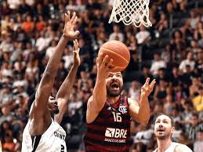

NBB: Brasília vence com mais de 100 pontos e segue 100%
O jogo era uma partida oficial da NBB, mas parecia um treino do Brasília. E mesmo com mais de 50 pontos de vantagem a equipe da casa não parava de pontuar
Na tarde deste sábado (25/10) o Brasília venceu seu segundo jogo no NBB contra o Rio Claro por 109 x 57 na Arena BRB Nilson Nelson.
A equipe da capital teve a maior pontuação do campeonato até o momento e o time paulista a menor, a partida, até agora, foi a de maior diferença de pontos da competição
Os destaques do time da capital foram Brunão, que foi cestinha com 26 pontos e líder em rebotes com 10, e o armador Lucas Lacerda que, vindo do banco, fez 21 pontos.
Brasília na frente
O Brasília começou o jogo mais ligado, com uma alta intensidade a equipe da capital tomou o controle da partida para si, o destaque do início da primeira etapa foi a defesa brasiliense, que limitou a quantidade de arremessos feitos pelo time do Rio Claro em 17 tentativas.
No final do primeiro período, a equipe paulista começou a ter mais eficiência ofensiva, entretanto o time da casa manteve seu bom aproveitamento no ataque, com ênfase na porcentagem de 50% de acerto nos arremessos para três pontos.
Assim, o primeiro quarto acabou com o Brasília na frente do placar com uma diferença de 10 pontos, destaque para o ala-pivô Brunão que fez 12 pontos.
Primeiro quarto: Brasília 31 x 21 Rio Claro
Domínio brasiliense
Diferente do primeiro quarto, o Rio Claro começou a limitar os arremessos convertidos do time da casa e continuou com um ataque constante.
Assim a equipe paulista deu suspiros de começar a controlar o jogo. Porém, não demorou para o Brasília voltar a ter o domínio da partida, como teve no primeiro período.
A equipe da capital voltou a ter uma melhor eficiência no ataque e na defesa como havia no início do jogo, isso deveu-se a marcação do time do time do Centro-Oeste que recuperava a bola rapidamente e isso gerava muitos contra-ataques que foram bem aproveitados pelo Brasília.
Então o Brasília não só continuou na frente no placar, mas também ampliou sua vantagem em 18 pontos. Destaque da primeira etapa foi o ala-pivô Brunão que terminou com 19 pontos.
Segundo quarto: Brasília 53 x 35 Rio Claro
Fala, torcida!
No intervalo do jogo, Paulo Martins da torcida organizada do Brasília Basquete falou sobre a importância da presença da torcida na Arena BRB NIlson Nelson “A torcida é sempre muito importante. Somos um aspecto fundamental do jogo, chamamos muito mais o time pra dentro da partida.”
Jogo de um time só
Na volta do intervalo, o domínio do time da casa permaneceu e a equipe visitante não conseguia acompanhar o ritmo acelerado do Brasília.
Além disso, em seu ataque o Rio Claro não tinha criatividade e nem objetividade, ou seja, a marcação da equipe da capital foi facilitada.
O Brasília aproveitou o declínio do time paulista e ampliou ainda mais sua vantagem.
Com um ataque que não parava de pontuar e uma defesa impecável, a equipe da casa praticamente sacramentou a vitória no terceiro quarto.
Vitória do Brasília
No último quarto com o jogo já encaminhado, a equipe brasiliense não tirou o pé e continuou pontuando, diferente do Rio Claro, que já abalado com a eventual derrota, sequer esboçou uma reação.
O jogo era uma partida oficial da NBB, mas parecia um treino do Brasília. E mesmo com mais de 50 pontos de vantagem a equipe da casa não parava de pontuar.
Então o jogo acabou e o Brasília venceu o Rio Claro por 109 x 57, a maior diferença de placar da temporada. Destaque do último período foi o armador Lucas Lacerda com 14 pontos e um aproveitamento de 82% nos arremessos.
Último quarto: Brasília 109 x 57 Rio Claro
Próximos confrontos
O Brasília enfrenta o Paulistano no dia 30 às 20h15 na Arena BRB Nilson Nelson.
Já o Rio Claro também enfrenta o Paulistano, mas no dia 28\10 às 20h30 no Ginásio Felipe Karan.
💬 Vejam o que os usuários estão comentando
Deixe seu comentário